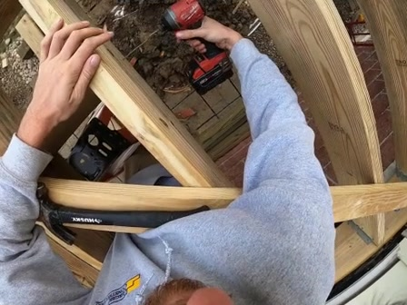

01:04–01:12
00:00Observed video01:20
QuestionWhere is a red teapot?
Reference answerThere is a red teapot on the cabinet opposite the refrigerator.

Question Qi “What color is this?”
Future frames are unavailable.
Would the answer rely on video evidence rather than general knowledge?
Yes / No judgmententropy H
H ≤ τAnswer directly active TP-KV only
H > τRequest guidance
After requested guidance is available
User guidance suppliedretrieve
active context retrieved frames
Setting
A frozen VLM receives a question at time ti. It can use only the video observed so far.
Bounded active context. Keep recent detail. Compress older context within a fixed token budget.
A separate archive. Store searchable representations on the CPU. This archive sits outside the active token budget.
Core method
01 / Observe
StreamClarify-QA
1,837 timestamped questions across 355 videos. Each question uses the video observed so far. Play short excerpts from StreamBench and OVO-Bench below.
Well-specified questions with a supported answer.
QuestionWhere is a red teapot?
Reference answerThere is a red teapot on the cabinet opposite the refrigerator.
QuestionWhat did I drop in the bowl in the sink?
Reference answereggplant
QuestionI need to use a drill to make holes in the wooden strips. Where can I find such a tool?
Reference answerThere seems to be a drill on the windowsill to your right that you can use.
Questions with an unclear intended referent.
QuestionWhat color is this?
Reference answerThe electric drill you're holding is likely black and red.
“This” could refer to the drill or the sweatshirt.
What color is the electric drill I'm holding?
QuestionDo you remember if the short-haired woman in the video was wearing that?
Reference answerYes, The short-haired woman in the video is wearing a green apron.
Do you remember if the short-haired woman in the video was wearing an apron?
QuestionWhat is that on the bed?
Reference answerA blanket
What is the grey item on the bed?
No supported substantive answer option.
QuestionWhat color is this man's hat?
Reference answerNone of the above
The hat is black. Black is missing from the offered choices.
QuestionWhat did I just plug into the outlet to charge?
Reference answerNone of the above
The source answer is a massage gun, which is missing from the choices.
QuestionDid I close the bottle of oil?
Reference answerUnable to answer
OVO-Bench labels this question “Unable to answer”. The excerpt does not establish what happened throughout the prefix.
Short excerpts from the observed video prefix. Answers are dataset reference annotations, not model predictions.
260 StreamBench videos
95 OVO-Bench videos
Dense video descriptions guide
query transformation and checking.
Retain, rewrite, or construct
questions.
| Source | Videos | Standard | Ambiguous | Unanswerable | Total QA |
|---|---|---|---|---|---|
| StreamBench | 260 | 913 | 254 | 389 | 1,556 |
| OVO-Bench | 95 | 82 | 48 | 151 | 281 |
Source selection and captions. OVO videos contain native HLD questions. Queries less than 5 seconds apart are filtered. MiniCPM-V 4.5 captions use 2 FPS, 448-pixel inputs, 6-second windows and a 3-second stride. Source questions are included; answers are withheld.
Ambiguity review. Replace specific noun phrases with pronouns. Human review retains 302 of 404 candidates with plausible alternative referents.
Unanswerable checks. For 389 StreamBench questions, check distractors against caption prefixes, remove the correct option and add “None of the above”. Screen all raw video prefixes; review 7 flagged cases. Keep the 151 native OVO-Bench HLD labels unchanged.
Experimental setup
Three frozen 8B backbones: LLaVA-OV-1.5, InternVL-3.5, and Qwen3-VL. No task-specific fine-tuning.
10K active tokens · 20 s recent window · 0.25 compression ratio · top-16 retrieval
Archived paper results. Three queries in one video included later frames in their saved context. The release fixes query order; aggregate scores have not been rerun.
1,837 questions · three backbones. Random and entropy selection use comparable rates. Selected queries receive oracle guidance.
Initial-error precision and recall. Answer accuracy and latency.
Qwen3-VL · each source separately · clarification off. Methods share a 6K active-context limit and retain their own memory designs.
Accuracy under a shared active-context limit. CPU storage is separate.
Each source and backbone separately · clarification off. Each method uses its standard memory configuration.
Accuracy, time to first token, and processing FPS. Charts below show Qwen3-VL.
302 ambiguous questions · Qwen3-VL. An evaluation-only referent-aware gate checks follow-ups. Accepted questions receive a fixed reply; rejected questions use direct retrieval.
Simulated accuracy, corrections, and harms. Entropy selection uses 162 questions.
Results
Trigger precision · 1,837 questions · comparable selection rates
34 answers corrected. 9 made worse.Entropy-gated gain: 8.3 points. Paired 95% CI: +4.2 to +12.5.
Entropy: 162 of 302 selected. Direct retrieval: all questions. These conditions differ in selection and guidance.
Additional study · Qwen3-VL
Five recorded cases: corrections, retrieval success, and a rejected follow-up. Replies are simulated.
Step through the recorded clarification branch.
Recorded model outputs and simulated replies.
The gate knows the annotated referent. It accepts a follow-up or falls back to direct retrieval. Accepted questions receive a fixed referent-only reply. Retrieved frames are candidates, not verified answer evidence.
@inproceedings{shao2027streamclarify,
title = {StreamClarify: Proactive Clarification for Grounded Streaming Video Question Answering},
author = {Shao, Zhuchen and Chen, Bo and Nahrstedt, Klara},
booktitle = {Proceedings of the IEEE/CVF Winter Conference on Applications of Computer Vision},
year = {2027}
}